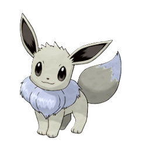
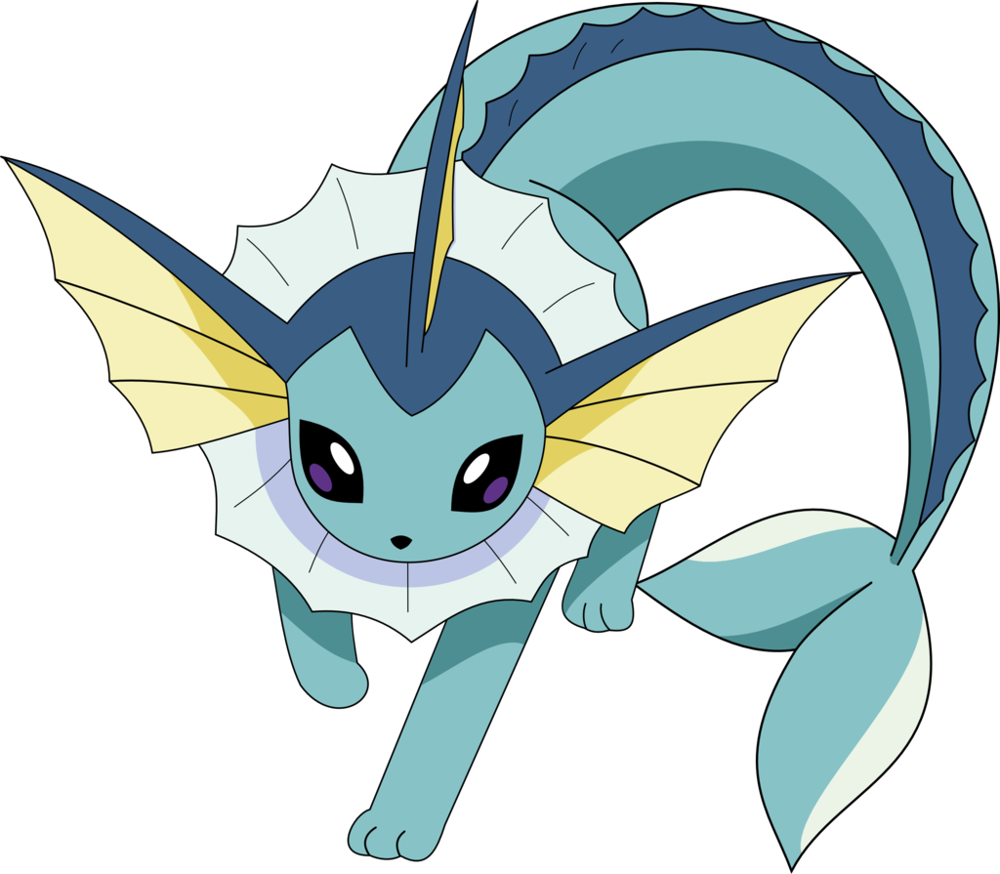
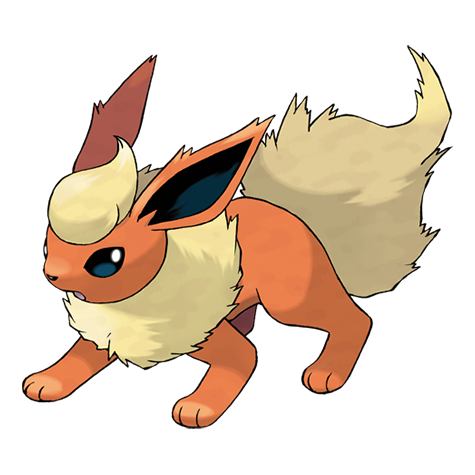
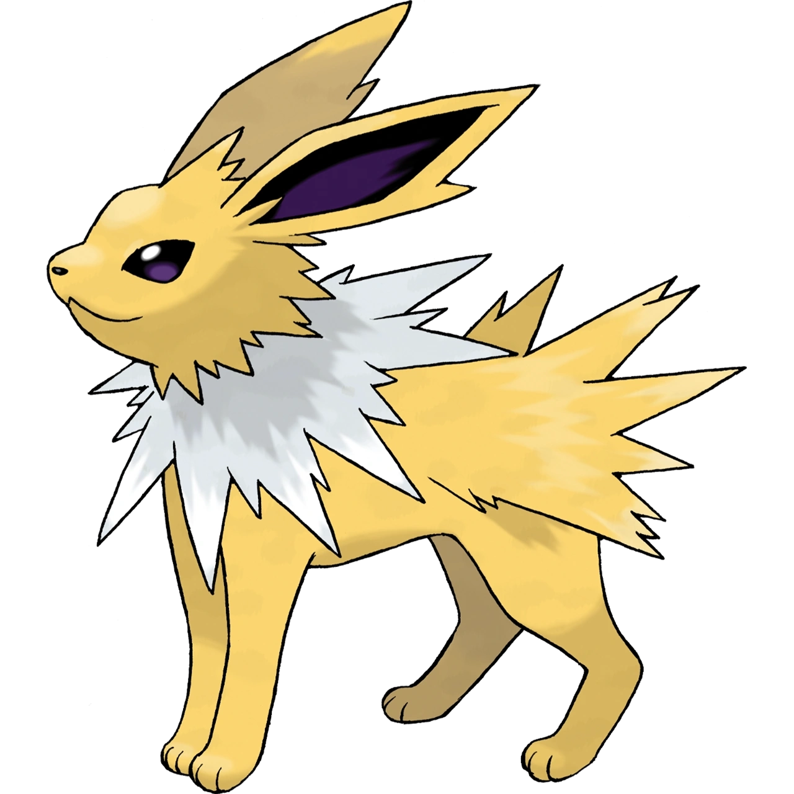
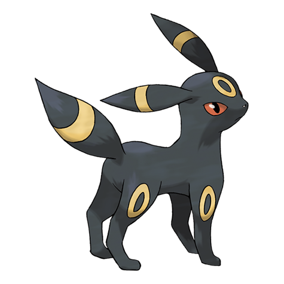
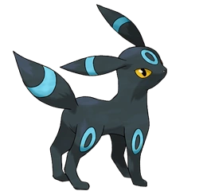
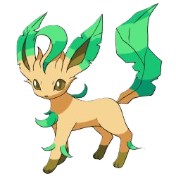
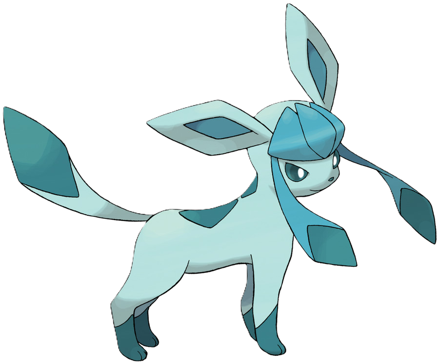

Eevee


Eevee is the source of all the eeveelutions. Being the "baby version" of each of them, it's likely you'll see eevees in other eeveelutions' nests.
As innocent as it looks, Eevee can pack quite a punch when used for offense. However it's nearly equal defense stats mean it can also be used as quite the defender if needed.
Eevee's most recognizable feature is most likely it's thick, white fur around it's neck. It can most commonly be found around plains and forests, sometimes hiding in the bushes.
Eevee has gender-specific appearance. If female, the white marks at the end of it's tail will be shaped as a flower. If male, it'll be an explosion symbol.
Eevee can be found in special forms. Alongside shiny, the possible forms that could be found are the following:
Strike Eevee:
Strike Eevee is a black Eevee with blue eyes and markings all over it's body and tail. It's most active during storms, often resting in abandoned places and underground dens.
Spirit Eevee:
Spirit Eevee is a pure white Eevee. Being slightly lighter and similar than shiny, it's often mistaken for it. It's most commonly found around graveyards or dark caves.
!!! Please note that the special forms above this message are always hunted for their price. They're worth significantly more than shinies. It's recommended to rid any competition you have before-hand if you want to hunt these. !!!
Gigantamax Eevee:
Only used in battles, Gigantamax Eevee can be found in the hands of trainers owning a Dynamax Band
Vaporeon


Vaporeon is one of the original, generation I eeveelutions. It has the most common evolution rate at 34% out of the 3.
It's fish-like fins and dolphin-like tail allow it to swim extremely quickly underwater. It's water nature allows it to gain extra strength in water. However, due to this nature, it's weaker on land.
Vaporeon's most recognizable features are it's fins and it's tail. It can most commonly be found in oceans and lakes, sometimes swimming up rivers.
Vaporeon can be found in special forms. Alongside shiny, the possible forms that could be found are the following:
Strike Vaporeon:
Strike Vaporeon is a black Vaporeon with light blue eyes and markings on it's body. For some reason, the tail is unaffected by the markings. It's most active during storms, often resting in bottomless oceans.
Spirit Vaporeon:
Spirit Vaporeon is a pure white Vaporeon. It has slightly less weight due to it's spirit-like build. It's often found around graveyards adjacent to larger bodies of water.
!!! Please note that the special forms above this message are always hunted for their price. They're worth significantly more than shinies. It's recommended to rid any competition you have before-hand if you want to hunt these. !!!
Flareon


Flareon is the second eeveelution out of the original, generation I trio. It's preferred by most families due to it's heating body. It has a 33% chance to evolve from eevee naturally.
Flareon, due to it's giant amount of fluff, is a really good defender. The sheer thickness of the fluff is capable of absorbing attacks. It's not to be messed with however, as it's fire abilities can influct serious burns.
Flareon's most recognizable due to it's huge fluff and tail. It's most commonly found around hot areas like deserts, savannas, sometimes they even wander up to Volcanoes to tlak to their fellow fire types.
Flareon can be found in special forms. Alongside shiny, the possible forms that could be found are the following:
Spirit Flareon:
Spirit Flareon is a black Flareon. It's slightly lighter due to it's spirit-like build. It's most commonly found around graveyards during summer.
!!! Please note that the special forms above this message are always hunted for their price. They're worth significantly more than shinies. !!!
Jolteon


Jolteon is the third eeveelution out of the original, generation I trio. It's very preffered for charging batteries and other electrical devices. They can be seen mostly around technicians and engineers.
Jolteon is the fastest eeveelution on the ground. Due to it's electic abilities, it's also a very good attacker due to the immobilization it can inflict.
Jolteon's most recognizable due to it's body being covered in fur that resemble spikes. It can most commonly be found during storms and mountains.
Jolteon can be found in special forms. Alongside shiny, the possible forms that could be found are the following:
Strike Jolteon:
Strike Jolteon is a black Jolteon with light blue markings all over it's body. It has increased lightning abilities and speed. It can only be found during raging storms.
Spirit Jolteon:
Spirit Jolteon is a black Jolteon with bluish-pink spikes. It's slightly lighter due to it's spirit-like build. It can be found in graveyards while it's storming.
!!! Please note that the special forms above this message are always hunted for their price. They're worth significantly more than shinies. !!!
Umbreon


Umbreon is the first of the second generation eeveelutions. It can be found along friendly trainers who enjoy the dark.
Umbreon is the eeveelution that has the easiest time hiding due to it's dark appearance. It's rings also glow in the dark.
Umbreon's most recognizable due to it's rings. It's mostly found during night in plains and dark forests.
Umbreon can be found in special forms. Alongside shiny, the possible forms that could be found are the following:
Strike Umbreon:
Strike Umbreon is a black Umbreon with light blue rings markings on it's back. It can only be found during night storms.
Ashen Umbreon:
Ashen Umbreon's body is entirely made of ash and luminescent bodies. It's capable of disassembling itself into tiny particles to form a fog, and reassemble in the place least expected by the enemy. It's quite a danger. It can most commonly be found around volcanoes and it's REALLY hard to tame.
Spirit Umbreon:
Spirit Umbreon is a black Umbreon with pink rings. It's slightly lighter due to it's spirit-like build. It can be found glowing around graveyards at night.
!!! Please note that the special forms above this message are always hunted for their price. They're worth significantly more than shinies. !!!
Espeon
Espeon is the second of the second generation eeveelutions. It can be found along friendly trainers who enjoy the day.
Espeon can manipulate minds and objects using it's psychic abilities. It also has a gem on it's forehead that is sought after by geminists due to their rarity and price.
Espeon's most recognizable due to it's large ears and red gem. It's mostly found during the day in plains and flowery areas.
Espeon can be found in special forms. Alongside shiny, the possible forms that could be found are the following:
Strike Espeon:
Strike Espeon is a black Espeon with light blue markings on it's body. It can only be found during day storms.
Spirit Espeon:
Spirit Espeon is a black Espeon with a pink gem. It's slightly lighter due to it's spirit-like build. It can be found roaming around graveyards during the day.
!!! Please note that the special forms above this message are always hunted for their price. They're worth significantly more than shinies. !!!
Leafeon


Leafeon is the first of the fourth generation eeveelutions. It's usually the ally of gardeners and florists, helping them along their jobs.
Leafeon can manipulate plants, being able to make them behave violently towards nearby humans, grow or retract faster and move objects around. It's leaves on it's body have medicinal properties that many people don't know about due to their ability to disguise them as regular leaves.
Leafeon's most recognizable due to it's leaf-like features. It's mostly found in overgrown jungles and lush areas. Sometimes it wanders underground to the mossier caves.
Leafeon can be found in special forms. Alongside shiny, the possible forms that could be found are the following:
Strike Leafeon:
Strike Leafeon is a black Leafeon with light blue markings on it's body. It can only be found during storms in overgrown areas.
Spirit Leafeon:
Spirit Leafeon is a black Leafeon with purple leaves. It's slightly lighter due to it's spirit-like build. It can be found roaming around overgrown graveyards.
Seasonal Leafeons:
There are 3 other seasonal leafeons.
The spring leafeon is only active during spring, and it has ping flowers growing on it instead of it's leaves.
The summer leafeon is the one we're all used to.
The autumn leafeon looks similar to the summer one, differences being it's jade eyes and brown leaves.
The winter leafeon has not been seen yet, but is suspected that it has light blue leaves with ice all over them.
!!! Please note that the special forms above this message are always hunted for their price. They're worth significantly more than shinies. !!!
Glaceon


Glaceon is the second of the fourth generation eeveelutions. It's usually the ally of kitchen staff due to their ability to preserve food for longer than regular refrigerators and freezers.
Glaceon can make any form of ice, being limited only by it's imagination. Sharp edges? Blunt hammers? Ice bricks? Glaceon can do it.
Glaceon's most recognizable due to it's ice crown and long, hanging ribbons. It's mostly found in frozen areas. Sometimes it wanders around during really cold winter days.
Glaceon can be found in special forms. Alongside shiny, the possible forms that could be found are the following:
Spirit Glaceon:
Spirit Glaceon is a black Glaceon with purple-pink ice features. It's slightly lighter due to it's spirit-like build. It can be found roaming around graveyards during winter.
!!! Please note that the special forms above this message are always hunted for their price. They're worth significantly more than shinies. !!!
Sylveon
Sylveon is the only sixth generation eeveelution. It's mostly found around trainers who love cute things, and show a lot of love to humans all around.
Sylveon is really useful in physical work, as it's ribbons can lift a theoretically infinite amount of weight. However, it's been observed that Sylveon's ribbon strength is limited by it's own strength.
Sylveon's most recognizable due to it's 4 long ribbons. It's mostly found in areas covered in flowers.
Sylveon can be found in special forms. Alongside shiny, the possible forms that could be found are the following:
Spirit Sylveon:
Spirit Sylveon is a black Sylveon with purple-pink ribbons. It's slightly lighter due to it's spirit-like build. It can be found roaming around graveyards with a lot of flowers..
!!! Please note that the special forms above this message are always hunted for their price. They're worth significantly more than shinies. !!!